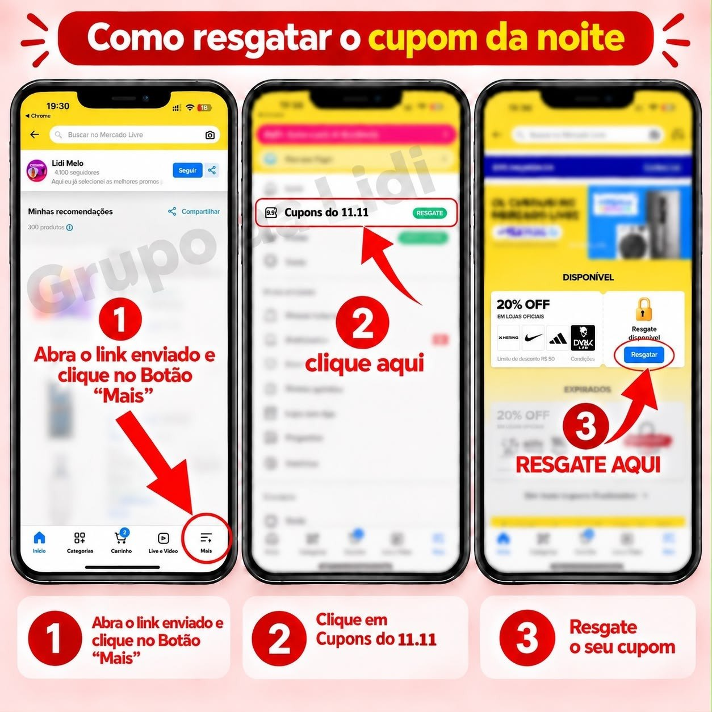

Perguntas
frequentes
Loja física, entrega, cupons e produtos originais — as dúvidas que mais chegam pra mim, respondidas aqui.
1 Onde fica a loja? De onde você é?
Eu não possuo loja e não faço entregas. Também não tenho produtos meus à venda: as lojas e os produtos são da plataforma, não meus.
Meu trabalho no grupo é garimpar promoções e cupons em lojas oficiais e/ou bem avaliadas para você economizar.
2 Vocês entregam para todo o Brasil?
Sim! As lojas que eu indico entregam para todo o Brasil, e na maioria das ofertas o frete sai de graça. Só fique de olho: algumas regiões, produtos e promoções podem ter frete ou valor mínimo. O valor final aparece no carrinho antes de você pagar.
3 Os produtos são originais?
Eu só envio link de loja oficial no Mercado Livre, de lojas com histórico mínimo de vendas e boa reputação, ou dos próprios sites da Natura e do Boticário. Os marketplaces também estão exigindo autorização de venda das marcas oficiais de perfume justamente para coibir falsificação.
Com esses filtros — e os do próprio Mercado Livre — dá para comprar com tranquilidade. Se ainda assim você não se sentir confortável, é só ficar de olho que eu também envio muitos links diretos das lojas oficiais Natura e Boticário.
E se você identificar que o produto é falso — o que é extremamente raro pelo histórico do grupo — você está coberta pela Compra Protegida do Mercado Livre: dá para devolver e denunciar a loja. Me avisa no privado também, por favor, que eu denuncio junto no Mercado Livre.
4 Por que os preços estão diferentes e/ou mudam?
Cada cupom pode dar um percentual ou um limite de desconto diferente — por isso o mesmo produto pode sair por valores diferentes dependendo do cupom que você aplicar.
E como é um marketplace, cada loja tem o seu preço e pode mudar a qualquer hora, sem controle nosso. O próprio Mercado Livre também pode mostrar o mesmo produto com outro preço.
Se o valor do link que eu mandei estiver diferente, pode ser que o estoque daquela oferta tenha acabado ou que o vendedor do link não entregue na região da conta que você está logada — nesses casos o Mercado Livre mostra outra oferta no lugar.
5 Quero um produto que você não enviou. Como faço?
Me manda uma mensagem no privado dizendo o que você procura — no grupo só eu envio mensagens. Pode ser que eu veja e não responda na hora, mas se eu conseguir encontrar, eu trago a oferta aqui no grupo.
Você também pode fazer sozinha: abre o link de outro produto que eu enviei, aplica o cupom e depois procura o que você quer — assim dá para ver se o cupom funciona no item que você escolheu.
6 Como eu aplico ou uso um cupom?
Mercado Livre: adicione o produto ao carrinho, toque em “Adicionar cupom de desconto” e cole o código antes de finalizar.
Natura e O Boticário: o campo do cupom fica no carrinho ou na tela de pagamento. Confira o desconto no resumo do pedido antes de pagar — se o código não for aceito, ele não vale para aquela compra.
O caminho é sempre esse: abre o link da oferta que eu mando, coloca o produto no carrinho e aplica o código. Cupom aqui é sempre gratuito: não precisa pagar nada nem mandar dados para mim. Se alguém pedir pagamento ou seus dados para liberar um cupom, desconfie — não é do grupo.
7 Meu cupom não funcionou. O que eu faço?
Cupom tem prazo, quantidade limitada e regras de cada loja (valor mínimo, produtos específicos, região ou conta). Quando não funciona, quase sempre é porque esgotou, venceu ou não vale para aquele item.
Deixa o produto no carrinho e vai testando os próximos cupons que eu enviar para o mesmo produto — muitas vezes o cupom novo entra e funciona.
Não é regra, mas os cupons do Mercado Livre costumam sair por volta das 9h, 12h, 15h, 17h e 20h.
8 Quem vende, entrega e cobra?
A venda, o pagamento, a entrega e toda a logística são sempre da loja — Mercado Livre, Natura, O Boticário ou outro site. Eu indico a oferta e o cupom; o pedido é feito por você, direto no site oficial da loja.
9 O que é o cupom de resgate do Mercado Livre?
De vez em quando o Mercado Livre libera um cupom de resgate — quase sempre a partir das 19h. Ele funciona diferente dos outros: você resgata antes da meia-noite e só consegue usar depois, no horário que a promoção liberar.
Só quem resgata antes consegue usar. O cupom fica salvo na sua conta; se você não resgatar, ele simplesmente não aparece na hora da compra e não tem como aplicar depois — nem pelo link que eu mandei.
No app do Mercado Livre:
- Toque em “Mais”, no canto inferior direito.
- Entre em “Cupons” — em eventos como o 11.11 aparece como “Cupons do 11.11”.
- Encontre o cupom e toque em RESGATAR.

Depois da meia-noite o cupom fica liberado. Alguns duram até as 9hs da manhã seguinte, mas os muito bons costumam acabar poucos minutos depois da meia-noite — então já deixe o carrinho pronto antes.
Resgatar é grátis, leva menos de um minuto e se você não usar, não tem problema.
10 O produto veio errado ou com problema. E agora?
Quem responde pela entrega é a loja, mas você não fica no prejuízo. No Mercado Livre, vá em “Compras”, abra o pedido e escolha “Tenho um problema”: a Compra Garantida cobre devolução, reembolso, atraso e produto diferente do anunciado.
No O Boticário, fale no atendimento do site ou do app com o número do pedido.
Comprou na Natura? Tem uma resposta só para isso aqui embaixo.
11 Comprei na Natura e veio errado ou não recebi. O que faço?
Sinto muito pelo ocorrido, mas fica tranquila que eles resolvem 🙏🏻 Os casos mais comuns são produto errado ou pedido marcado como entregue sem você ter recebido. Nos dois, quem resolve é o SAC da Natura:
- Abra Meus Pedidos Natura, faça login e clique no balão “Posso ajudar?” — às vezes ele já aparece embaixo do pedido.
- Prossiga com a solicitação e peça para falar com um atendente real quando o chat abrir.
- Informe o número do pedido e o que aconteceu: eles te passam o procedimento certinho.
Se não tinha ninguém em casa, vale checar com os vizinhos: às vezes a entrega fica lá.
Por telefone: 0300 711 55 66 (celular) ou 0800 0 11 55 66 (fixo). Atendimento: segunda a sexta, 8h às 20h por chat e 9h às 18h por telefone; sábado, 9h às 18h nos dois canais.
12 Você dá suporte personalizado?
Eu tento responder todas vocês, mas nem sempre eu consigo — e não dou suporte personalizado, principalmente nos assuntos que já estão respondidos aqui nesta página. Se for sobre uma oferta ou cupom que eu mandei, me manda no privado que eu leio quando consigo 🙏🏻
Problemas com pedido precisam ser tratados direto com as lojas: eu não tenho como fazer nada em relação a pedidos que não foram feitos por mim, pela própria política de segurança das empresas.
Ficou com outra dúvida? Me manda no privado que eu vejo quando consigo 💜
Aviso de transparência: eu participo de programas de afiliados e posso receber uma comissão das lojas pelas compras feitas pelos links que envio. Você não paga nada a mais por isso — o preço é o mesmo da loja.